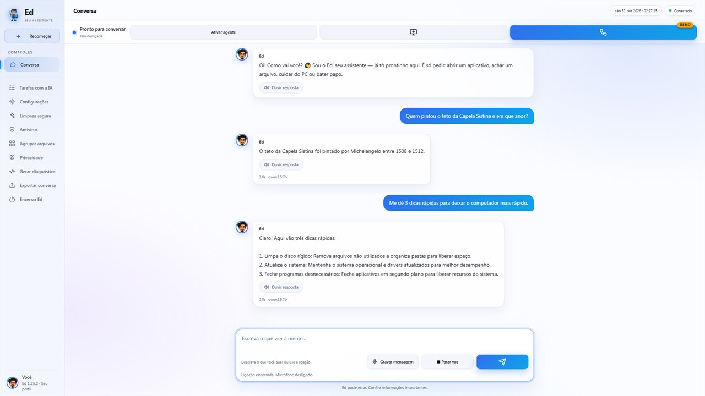
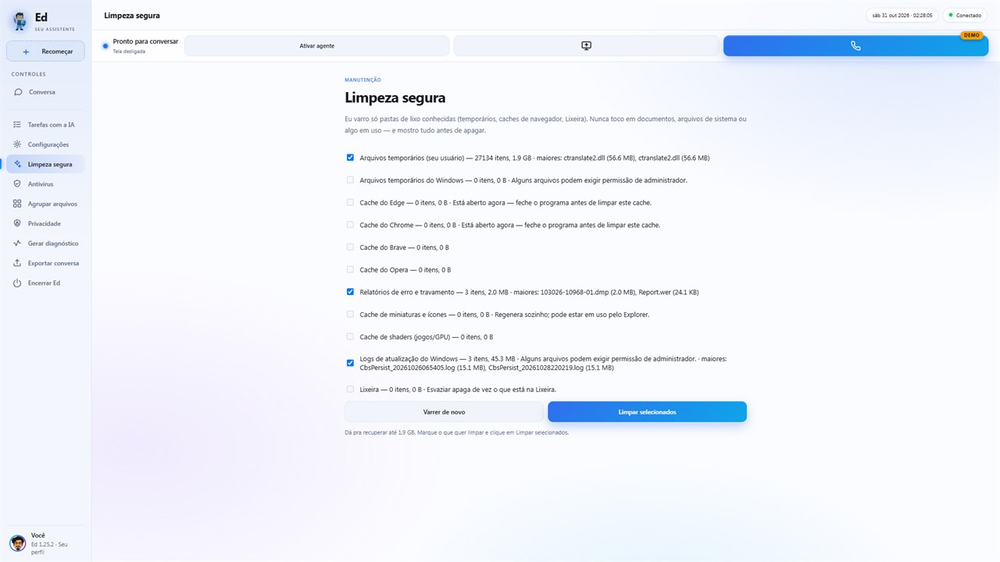
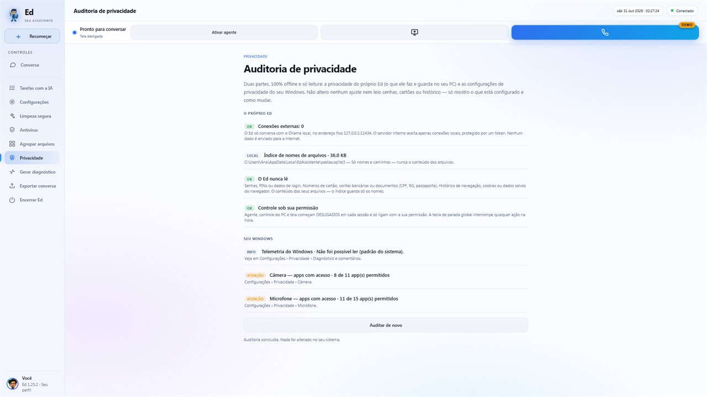

Conversa de verdade
Por texto ou mensagem de voz, em 11 idiomas. Abre no idioma do seu Windows.
Assistente de IA para Windows
O Ed conversa com você, vê a tela quando você deixa, abre programas, faz limpeza segura e consulta a Wikipédia guardada no seu computador. Depois de instalado, funciona sem internet, e suas conversas não saem da máquina.
R$ 29,95 · pagamento único · Windows 10 e 11 (64 bits)

Tudo roda no seu computador, e você liga só o que quiser usar.
Por texto ou mensagem de voz, em 11 idiomas. Abre no idioma do seu Windows.
Fale com o Ed e ouça a resposta, com uma voz que roda no próprio PC. Ainda é demonstração: pode errar ou demorar.
Ligue o compartilhamento e pergunte “o que aparece na minha tela?”. A imagem fica só na memória e não é salva.
A Wikipédia em português guardada no seu disco. O Ed confere nomes, datas e números antes de responder.
“Abra o Discord”, “abra a pasta Downloads”, “encontre contrato.pdf”. Também ajusta o volume, pausa a música e bloqueia o PC.
Mostra quanto dá para liberar em temporários, caches de navegador e Lixeira, e só apaga o que você marcar.
Verificação offline com quarentena reversível: nada é apagado. Não substitui o Microsoft Defender.
Mostra o que o Ed guarda e confere câmera, microfone e telemetria do Windows, sem mudar nada.
Agente, controle do PC e compartilhamento de tela começam desligados em cada sessão. Ações perigosas, como desligar, reiniciar ou encerrar programas, sempre pedem confirmação. A tecla F8 interrompe qualquer ação na hora.
Telas de verdade do programa.


Para perguntas de conhecimento (história, geografia, ciência…), o Ed consulta a Wikipédia em português guardada no seu disco antes de responder.
Ela é opcional: a versão completa ocupa cerca de 6,7 GB e a compacta, 1,7 GB. O download vem do site oficial do Kiwix e, depois dele, tudo funciona sem internet.
O Ed é uma IA local de porte pequeno: ele pode errar. Confira informações importantes.
| Modelo | Sem a Wikipédia | Com a Wikipédia |
|---|---|---|
| Básico | 51% | 81% |
| Recomendado | 82% | ~92% |
| Seu PC | Modelo | Tamanho |
|---|---|---|
| 8 GB de RAM | Básico (qwen2.5:1.5b) | ~1 GB |
| 14 GB ou mais | Recomendado (qwen2.5:7b) | ~4,7 GB |
| 24 GB ou mais | Avançado (qwen2.5:14b) | ~9 GB |
As funções de assistente (abrir programas, limpeza, verificação de arquivos e controle do PC) funcionam mesmo sem a IA.
R$ 29,95
pagamento único na Microsoft Store
Só na primeira configuração: o Ed baixa o motor de IA (Ollama, gratuito) e o modelo de IA. Depois disso, funciona sem internet. A Wikipédia offline e o modelo que lê a tela também são baixados uma vez só, se você quiser usar.
Se for Windows 10 (versão 1809 ou mais nova) ou Windows 11, de 64 bits, com pelo menos 8 GB de RAM e uns 10 GB livres, sim. O Ed olha a memória do PC e escolhe o modelo certo: com 8 GB ele usa o Básico; com 14 GB ou mais, o Recomendado.
Não. É pagamento único na Microsoft Store, sem mensalidade, sem anúncios e sem compras dentro do app.
Não. O Ed só conversa com o Ollama no próprio computador (endereço 127.0.0.1). Não há conta, telemetria nem rastreamento. Os detalhes estão na política de privacidade.
O Ed usa o Ollama, um motor de IA gratuito. Se ele não estiver instalado, o Ed baixa o instalador oficial do site ollama.com, confere a assinatura digital e instala com um clique.
Funciona, mas ainda é Demo: pode errar, demorar ou não entender tudo. Se preferir, digite ou use o botão Gravar mensagem.
Não em tudo. É uma IA local de porte pequeno: em tarefas complexas, os grandes modelos online são mais fortes. A vantagem do Ed é rodar no seu PC, funcionar sem internet, manter suas conversas na máquina e não ter mensalidade. Ele pode errar, então confira informações importantes.
Não há período de teste na loja. Se o Ed não funcionar no seu PC, o reembolso é pedido à própria Microsoft, conforme a política da loja. Você também tem o direito de arrependimento de 7 dias do Código de Defesa do Consumidor.
Não. Por enquanto, só no Windows 10 e 11 (64 bits).
É. Na primeira pergunta depois de ligar o PC, o modelo de IA é carregado na memória (até uns 40 segundos em alguns computadores). As seguintes são rápidas.
Escreva para edgargta3@gmail.com. Dentro do Ed, os botões Gerar diagnóstico e Exportar conversa criam dois arquivos que mostram o que aconteceu. Nada é enviado sozinho: você revisa e manda se quiser.
Leia a política de privacidade completa
Esta página não usa cookies, anúncios nem rastreadores.